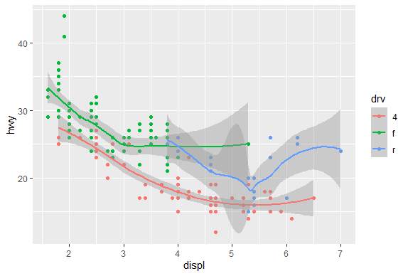
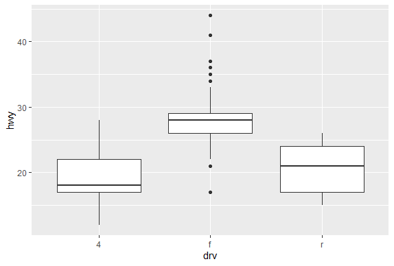
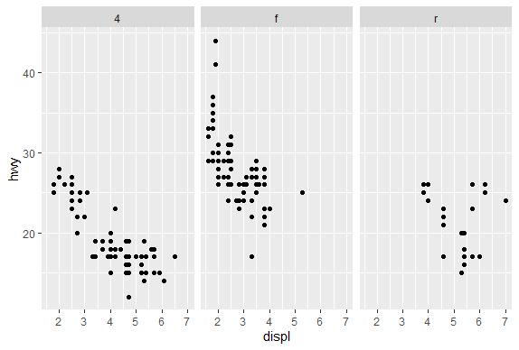

GGPlot2 Part1
library(swirl)
library(ggplot2)
swirl()
| Welcome to swirl! Please sign in. If you've been here before, use the same name as
| you did then. If you are new, call yourself something unique.
What shall I call you? Krishnakanth Allika
| Please choose a course, or type 0 to exit swirl.
1: Exploratory Data Analysis
2: Take me to the swirl course repository!
Selection: 1
| Please choose a lesson, or type 0 to return to course menu.
1: Principles of Analytic Graphs 2: Exploratory Graphs
3: Graphics Devices in R 4: Plotting Systems
5: Base Plotting System 6: Lattice Plotting System
7: Working with Colors 8: GGPlot2 Part1
9: GGPlot2 Part2 10: GGPlot2 Extras
11: Hierarchical Clustering 12: K Means Clustering
13: Dimension Reduction 14: Clustering Example
15: CaseStudy
Selection: 8
| Attempting to load lesson dependencies...
| Package ‘ggplot2’ loaded correctly!
| | 0%
| GGPlot2_Part1. (Slides for this and other Data Science courses may be found at
| github https://github.com/DataScienceSpecialization/courses/. If you care to use
| them, they must be downloaded as a zip file and viewed locally. This lesson
| corresponds to 04_ExploratoryAnalysis/ggplot2.)
...
|== | 2%
| In another lesson, we gave you an overview of the three plotting systems in R. In
| this lesson we'll focus on the third and newest plotting system in R, ggplot2. As
| we did with the other two systems, we'll focus on creating graphics on the screen
| device rather than another graphics device.
...
|==== | 5%
| The ggplot2 package is an add-on package available from CRAN via install.packages().
| (Don't worry, we've installed it for you already.) It is an implementation of The
| Grammar of Graphics, an abstract concept (as well as book) authored and invented by
| Leland Wilkinson and implemented by Hadley Wickham while he was a graduate student
| at Iowa State. The web site http://ggplot2.org provides complete documentation.
...
|====== | 7%
| A grammar of graphics represents an abstraction of graphics, that is, a theory of
| graphics which conceptualizes basic pieces from which you can build new graphics and
| graphical objects. The goal of the grammar is to “Shorten the distance from mind to
| page”. From Hadley Wickham's book we learn that
...
|======== | 10%
| The ggplot2 package "is composed of a set of independent components that can be
| composed in many different ways. ... you can create new graphics that are precisely
| tailored for your problem." These components include aesthetics which are attributes
| such as colour, shape, and size, and geometric objects or geoms such as points,
| lines, and bars.
...
|========= | 12%
| Before we delve into details, let's review the other 2 plotting systems.
...
|=========== | 15%
| Recall what you know about R's base plotting system. Which of the following does NOT
| apply to it?
1: It is convenient and mirrors how we think of building plots and analyzing data
2: Can easily go back once the plot has started (e.g., to adjust margins or correct a typo)
3: Use annotation functions to add/modify (text, lines, points, axis)
4: Start with plot (or similar) function
Selection: 2
| That's correct!
|============= | 17%
| Recall what you know about R's lattice plotting system. Which of the following does
| NOT apply to it?
1: Margins and spacing are set automatically because entire plot is specified at once
2: Most useful for conditioning types of plots and putting many panels on one plot
3: Can always add to the plot once it is created
4: Plots are created with a single function call (xyplot, bwplot, etc.)
Selection: 3
| Excellent job!
|=============== | 20%
| If we told you that ggplot2 combines the best of base and lattice, that would mean
| it ...?
1: Automatically deals with spacings, text, titles but also allows you to annotate
2: Its default mode makes many choices for you (but you can customize!)
3: All of the others
4: Like lattice it allows for multipanels but more easily and intuitively
Selection: 3
| You are quite good my friend!
|================= | 22%
| Yes, ggplot2 combines the best of base and lattice. It allows for multipanel
| (conditioning) plots (as lattice does) but also post facto annotation (as base
| does), so you can add titles and labels. It uses the low-level grid package (which
| comes with R) to draw the graphics. As part of its grammar philosophy, ggplot2 plots
| are composed of aesthetics (attributes such as size, shape, color) and geoms
| (points, lines, and bars), the geometric objects you see on the plot.
...
|=================== | 24%
| The ggplot2 package has 2 workhorse functions. The more basic workhorse function is
| qplot, (think quick plot), which works like the plot function in the base graphics
| system. It can produce many types of plots (scatter, histograms, box and whisker)
| while hiding tedious details from the user. Similar to lattice functions, it looks
| for data in a data frame or parent environment.
...
|===================== | 27%
| The more advanced workhorse function in the package is ggplot, which is more
| flexible and can be customized for doing things qplot cannot do. In this lesson
| we'll focus on qplot.
...
|======================= | 29%
| We'll start by showing how easy and versatile qplot is. First, let's look at some
| data which comes with the ggplot2 package. The mpg data frame contains fuel economy
| data for 38 models of cars manufactured in 1999 and 2008. Run the R command str with
| the argument mpg. This will give you an idea of what mpg contains.
str(mpg)
tibble [234 x 11] (S3: tbl_df/tbl/data.frame) $ manufacturer: chr [1:234] "audi" "audi" "audi" "audi" ... $ model : chr [1:234] "a4" "a4" "a4" "a4" ... $ displ : num [1:234] 1.8 1.8 2 2 2.8 2.8 3.1 1.8 1.8 2 ... $ year : int [1:234] 1999 1999 2008 2008 1999 1999 2008 1999 1999 2008 ... $ cyl : int [1:234] 4 4 4 4 6 6 6 4 4 4 ... $ trans : chr [1:234] "auto(l5)" "manual(m5)" "manual(m6)" "auto(av)" ... $ drv : chr [1:234] "f" "f" "f" "f" ... $ cty : int [1:234] 18 21 20 21 16 18 18 18 16 20 ... $ hwy : int [1:234] 29 29 31 30 26 26 27 26 25 28 ... $ fl : chr [1:234] "p" "p" "p" "p" ... $ class : chr [1:234] "compact" "compact" "compact" "compact" ...| You are really on a roll!
|======================== | 32%
| We see that there are 234 points in the dataset concerning 11 different
| characteristics of the cars. Suppose we want to see if there's a correlation between
| engine displacement (displ) and highway miles per gallon (hwy). As we did with the
| plot function of the base system we could simply call qplot with 3 arguments, the
| first two are the variables we want to examine and the third argument data is set
| equal to the name of the dataset which contains them (in this case, mpg). Try this
| now.
qplot(displ,hwy,data=mpg)

| You are amazing!
|========================== | 34%
| A nice scatterplot done simply, right? All the labels are provided. The first
| argument is shown along the x-axis and the second along the y-axis. The negative
| trend (increasing displacement and lower gas mileage) is pretty clear. Now suppose
| we want to do the same plot but this time use different colors to distinguish
| between the 3 factors (subsets) of different types of drive (drv) in the data
| (front-wheel, rear-wheel, and 4-wheel). Again, qplot makes this very easy. We'll
| just add what ggplot2 calls an aesthetic, a fourth argument, color, and set it equal
| to drv. Try this now. (Use the up arrow key to save some typing.)
qplot(displ,hwy,data=mpg,color=drv)

| All that hard work is paying off!
|============================ | 37%
| Pretty cool, right? See the legend to the right which qplot helpfully supplied? The
| colors were automatically assigned by qplot so the legend decodes the colors for
| you. Notice that qplot automatically used dots or points to indicate the data. These
| points are geoms (geometric objects). We could have used a different aesthetic, for
| instance shape instead of color, to distinguish between the drive types.
...
|============================== | 39%
| Now let's add a second geom to the default points. How about some smoothing function
| to produce trend lines, one for each color? Just add a fifth argument, geom, and
| using the R function c(), set it equal to the concatenation of the two strings
| "point" and "smooth". The first refers to the data points and second to the trend
| lines we want plotted. Try this now.
qplot(displ,hwy,data=mpg,color=drv,geom=c("point","smooth"))
geom_smooth()using method = 'loess' and formula 'y ~ x'

| That's correct!
|================================ | 41%
| Notice the gray areas surrounding each trend lines. These indicate the 95%
| confidence intervals for the lines.
...
|================================== | 44%
| Before we leave qplot's scatterplotting ability, call qplot again, this time with 3
| arguments. The first is y set equal to hwy, the second is data set equal to mpg, and
| the third is color set equal to drv. Try this now.
qplot(y=hwy,data=mpg,color=drv)

| Great job!
|==================================== | 46%
| What's this plot showing? We see the x-axis ranges from 0 to 250 and we remember
| that we had 234 data points in our set, so we can infer that each point in the plot
| represents one of the hwy values (indicated by the y-axis). We've created the vector
| myhigh for you which contains the hwy data from the mpg dataset. Look at myhigh now.
play()
| Entering play mode. Experiment as you please, then type nxt() when you are ready to
| resume the lesson.
qplot(y=hwy,data=mpg)

nxt()
| Resuming lesson...
| What's this plot showing? We see the x-axis ranges from 0 to 250 and we remember
| that we had 234 data points in our set, so we can infer that each point in the plot
| represents one of the hwy values (indicated by the y-axis). We've created the vector
| myhigh for you which contains the hwy data from the mpg dataset. Look at myhigh now.
myhigh
[1] 29 29 31 30 26 26 27 26 25 28 27 25 25 25 25 24 25 23 20 15 20 17 17 26 23 26 25 [28] 24 19 14 15 17 27 30 26 29 26 24 24 22 22 24 24 17 22 21 23 23 19 18 17 17 19 19 [55] 12 17 15 17 17 12 17 16 18 15 16 12 17 17 16 12 15 16 17 15 17 17 18 17 19 17 19 [82] 19 17 17 17 16 16 17 15 17 26 25 26 24 21 22 23 22 20 33 32 32 29 32 34 36 36 29 [109] 26 27 30 31 26 26 28 26 29 28 27 24 24 24 22 19 20 17 12 19 18 14 15 18 18 15 17 [136] 16 18 17 19 19 17 29 27 31 32 27 26 26 25 25 17 17 20 18 26 26 27 28 25 25 24 27 [163] 25 26 23 26 26 26 26 25 27 25 27 20 20 19 17 20 17 29 27 31 31 26 26 28 27 29 31 [190] 31 26 26 27 30 33 35 37 35 15 18 20 20 22 17 19 18 20 29 26 29 29 24 44 29 26 29 [217] 29 29 29 23 24 44 41 29 26 28 29 29 29 28 29 26 26 26| You got it!
|====================================== | 49%
| Comparing the values of myhigh with the plot, we see the first entries in the vector
| (29, 29, 31, 30,...) correspond to the leftmost points in the the plot (in order),
| and the last entries in myhigh (28, 29, 26, 26, 26) correspond to the rightmost
| plotted points. So, specifying the y parameter only, without an x argument, plots
| the values of the y argument in the order in which they occur in the data.
...
|======================================= | 51%
| The all-purpose qplot can also create box and whisker plots. Call qplot now with 4
| arguments. First specify the variable by which you'll split the data, in this case
| drv, then specify the variable which you want to examine, in this case hwy. The
| third argument is data (set equal to mpg), and the fourth, the geom, set equal to
| the string "boxplot"
qplot(drv,hwy,data=mpg,geom="boxplot")

| Your dedication is inspiring!
|========================================= | 54%
| We see 3 boxes, one for each drive. Now to impress you, call qplot with 5 arguments.
| The first 4 are just as you used previously, (drv, hwy, data set equal to mpg, and
| geom set equal to the string "boxplot"). Now add a fifth argument, color, equal to
| manufacturer.
qplot(drv,hwy,data=mpg,geom="boxplot",color=manufacturer)

| You are amazing!
|=========================================== | 56%
| It's a little squished but we just wanted to illustrate qplot's capabilities. Notice
| that there are still 3 regions of the plot (determined by the factor drv). Each is
| subdivided into several boxes depicting different manufacturers.
...
|============================================= | 59%
| Now, on to histograms. These display frequency counts for a single variable. Let's
| start with an easy one. Call qplot with 3 arguments. First specify the variable for
| which you want the frequency count, in this case hwy, then specify the data (set
| equal to mpg), and finally, the aesthetic, fill, set equal to drv. Instead of a plain
| old histogram, this will again use colors to distinguish the 3 different drive
| factors.
qplot(hwy,data=mpg,fill=drv)
stat_bin()usingbins = 30. Pick better value withbinwidth.

| Your dedication is inspiring!
|=============================================== | 61%
| See how qplot consistently uses the colors. Red (if 4-wheel drv is in the bin) is at
| the bottom of the bin, then green on top of it (if present), followed by blue (rear
| wheel drv). The color lets us see right away that 4-wheel drive vehicles in this
| dataset don't have gas mileages exceeding 30 miles per gallon.
...
|================================================= | 63%
| It's cool that qplot can do this so easily, but some people may find this multi-color
| histogram hard to interpret. Instead of using colors to distinguish between the drive
| factors let's use facets or panels. (That's what lattice called them.) This just
| means we'll split the data into 3 subsets (according to drive) and make 3 smaller
| individual plots of each subset in one plot (and with one call to qplot).
...
|=================================================== | 66%
| Remember that with base plot we had to do each subplot individually. The lattice
| system made plotting conditioning plots easier. Let's see how easy it is with qplot.
...
|===================================================== | 68%
| We'll do two plots, a scatterplot and then a histogram, each with 3 facets. For the
| scatterplot, call qplot with 4 arguments. The first two are displ and hwy and the
| third is the argument data set equal to mpg. The fourth is the argument facets which
| will be set equal to the expression . ~ drv which is ggplot2's shorthand for number
| of rows (to the left of the ~) and number of columns (to the right of the ~). Here
| the . indicates a single row and drv implies 3, since there are 3 distinct drive
| factors. Try this now.
qplot(displ,hwy,data=mpg,facets=.~drv)

| Nice work!
|====================================================== | 71%
| The result is a 1 by 3 array of plots. Note how each is labeled at the top with the
| factor label (4,f, or r). This shows us more detailed information than the histogram.
| We see the relationship between displacement and highway mileage for each of the 3
| drive factors.
...
|======================================================== | 73%
| Now we'll do a histogram, again calling qplot with 4 arguments. This time, since we
| need only one variable for a histogram, the first is hwy and the second is the
| argument data set equal to mpg. The third is the argument facets which we'll set
| equal to the expression drv ~ . . This will give us a different arrangement of the
| facets. The fourth argument is binwidth. Set this equal to 2. Try this now.
qplot(hwy,data=mpg,facets=drv~.,binwidth=2)

| Keep working like that and you'll get there!
|========================================================== | 76%
| The facets argument, drv ~ ., resulted in what arrangement of facets?
1: 2 by 2
2: 1 by 3
3: 3 by 1
4: huh?
Selection: 3
| Nice work!
|============================================================ | 78%
| Pretty good, right? Not too difficult either. Let's review what we learned!
...
|============================================================== | 80%
| Which of the following is a basic workhorse function of ggplot2?
1: gplot
2: scatterplot
3: qplot
4: xyplot
5: hist
Selection: 3
| All that practice is paying off!
|================================================================ | 83%
| Which types of plot does qplot plot?
1: scatterplots
2: all of the others
3: histograms
4: box and whisker plots
Selection: 2
| Great job!
|================================================================== | 85%
| What does the gg in ggplot2 stand for?
1: goto graphics
2: grammar of graphics
3: good grief
4: good graphics
Selection: 2
| Your dedication is inspiring!
|==================================================================== | 88%
| True or False? The geom argument takes a string for a value.
1: False
2: True
Selection: 2
| Nice work!
|===================================================================== | 90%
| True or False? The data argument takes a string for a value.
1: True
2: False
Selection: 2
| You're the best!
|======================================================================= | 93%
| True or False? The binwidth argument takes a string for a value.
1: False
2: True
Selection: 1
| Great job!
|========================================================================= | 95%
| True or False? The user must specify x- and y-axis labels when using qplot.
1: True
2: False
Selection: 2
| All that practice is paying off!
|=========================================================================== | 98%
| Congrats! You've finished plot 1 of ggplot2. In the next lesson the plot thickens.
...
|=============================================================================| 100%
| Would you like to receive credit for completing this course on Coursera.org?
1: Yes
2: No
Selection: 1
What is your email address? xxxxxx@xxxxxxxxxxxx
What is your assignment token? xXxXxxXXxXxxXXXx
Grade submission succeeded!
| That's a job well done!
| You've reached the end of this lesson! Returning to the main menu...
| Please choose a course, or type 0 to exit swirl.
1: Exploratory Data Analysis
2: Take me to the swirl course repository!
Selection: 0
| Leaving swirl now. Type swirl() to resume.
rm(list=ls())
Last updated 2020-05-08 20:04:09.107833 IST
Comments